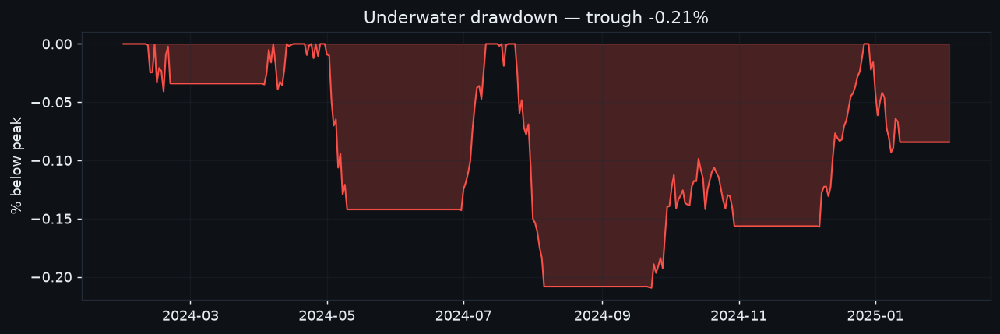
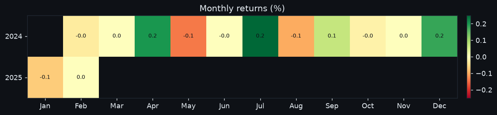
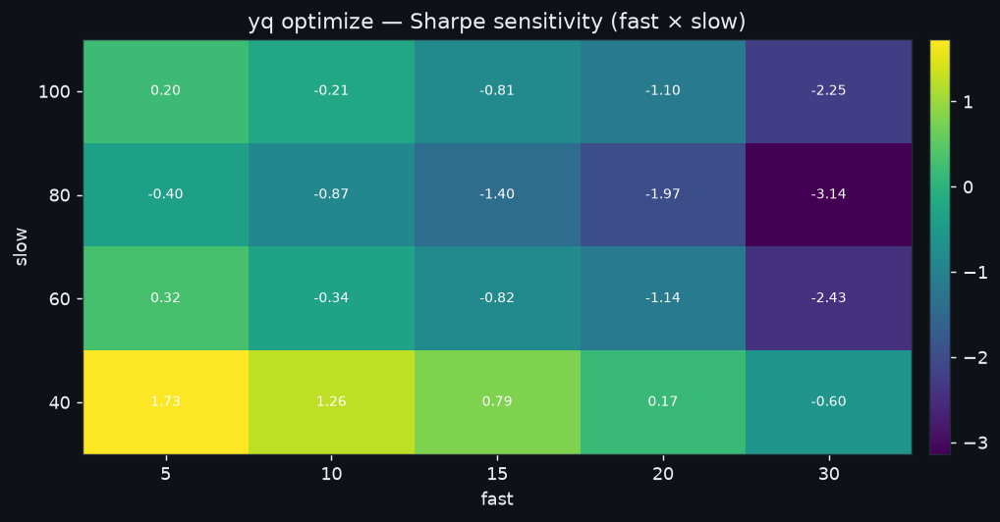
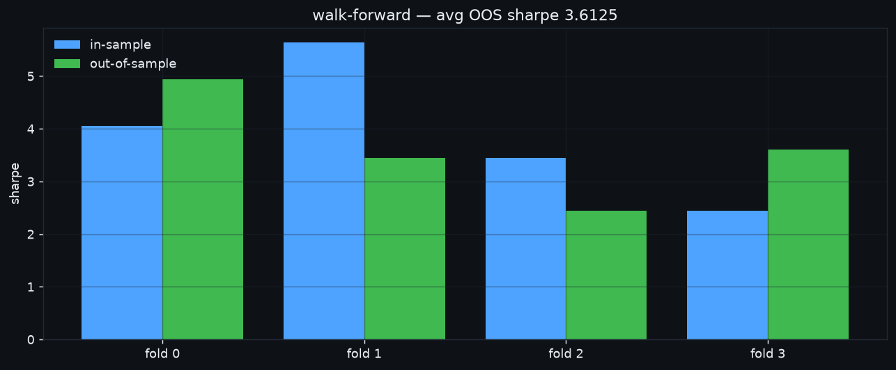
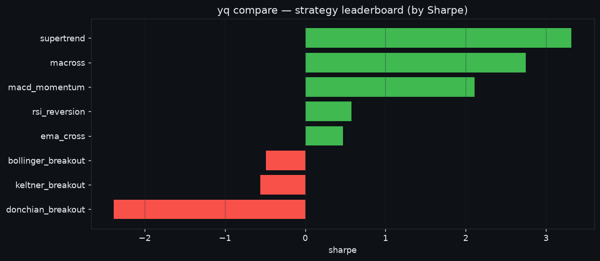
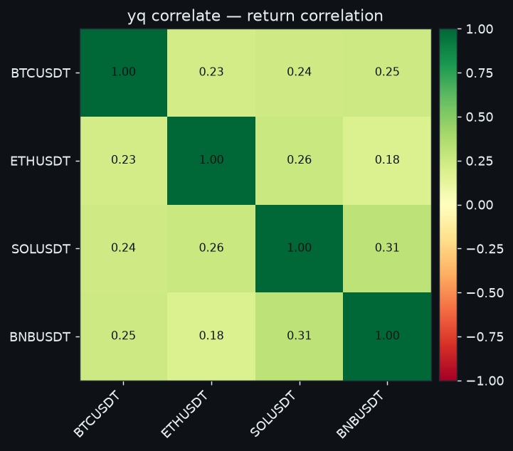

Worked examples¶
Real yq sessions on seeded data (BTCUSDT / ETHUSDT / SOLUSDT, 500×1d each) —
every command below was actually run; the JSON is its real output. Pipe output is
JSON; in a terminal the same data renders as colored tables/boxes.
Setup
These use a local store so they run offline. In normal use yq collect
fills the store from an exchange first. All commands accept --store /
--state to point at specific files.
Research a strategy¶
$ yq backtest BTCUSDT 1d keltner_breakout
{
"bars": 479, "start_equity": 10000.0, "end_equity": 10379.65,
"total_return": 0.038, "sharpe": 1.732, "sortino": 1.908, "calmar": 4.22,
"max_drawdown": -0.0068, "num_trades": 24, "num_closed": 5, "win_rate": 0.0,
"benchmark_return": 0.1174, "excess_return": -0.0794
}
vs buy & hold
Every backtest now reports benchmark_return (holding the asset over the
same window) and excess_return (strategy minus benchmark). A negative
excess_return — as here — means buy-and-hold beat the strategy; the edge
has to clear that bar to be worth trading. The dashboard draws the same
benchmark as a dashed line on the equity curve.
Reading it
total_return is equity-based (includes the unrealized mark-to-market of
an open position), while win_rate / best_trade cover only closed
round-trips. A trend strategy that ends holding a winning long can show a
positive return with few/no closed wins — the gains are still on the book.
Drawdown
The dashboard Research panel draws an underwater chart beneath the equity
curve — equity as a percentage below its running peak. Its trough is exactly
the max_drawdown stat, so you can see how long and how deep each
drawdown ran, not just its worst point.

Monthly returns
The panel also renders a calendar heatmap of month-by-month returns
(green positive / red negative). Compounding the cells reconciles with
total_return; the grid makes consistency and seasonality obvious — a few
big months vs a steady drip read very differently for the same total.

Optimize parameters¶
$ yq optimize BTCUSDT 1d macross --metric sharpe
{
"metric": "sharpe",
"best_params": {"fast": 20, "slow": 100},
"best_score": 1.431,
"top": [
{"params": {"fast": 20, "slow": 100}, "score": 1.431},
{"params": {"fast": 10, "slow": 100}, "score": 1.092},
{"params": {"fast": 5, "slow": 100}, "score": 1.015}
]
}
The response also carries the full grid under results (every combo, not
just the top 5). When a grid varies exactly two parameters, the dashboard
Research panel renders it as a sensitivity heatmap (e.g. fast × slow →
Sharpe) — a robust plateau of good scores beats a lone spike that's likely
overfit.

Validate out-of-sample (walk-forward)¶
$ yq optimize BTCUSDT 1d macross --walk-forward 4
{
"metric": "sharpe", "n_folds": 4, "avg_out_of_sample": 0.348,
"folds": [
{"fold": 0, "best_params": {"fast": 10, "slow": 50}, "in_sample": 0.0, "oos_sharpe": -1.365},
{"fold": 1, "best_params": {"fast": 20, "slow": 30}, "in_sample": 0.307, "oos_sharpe": 0.0},
{"fold": 2, "best_params": {"fast": 5, "slow": 50}, "in_sample": 0.0, "oos_sharpe": 2.757},
{"fold": 3, "best_params": {"fast": 5, "slow": 50}, "in_sample": 2.757, "oos_sharpe": 0.0}
]
}
The per-fold gap between in_sample and oos_sharpe is the overfitting tell —
chase the avg_out_of_sample, not the grid's best in-sample score. The dashboard
Research panel plots exactly this, in-sample vs out-of-sample per fold:

Rank every strategy (leaderboard)¶
Don't guess which edge fits a symbol — run them all and rank:
$ yq compare BTCUSDT 1d --strategies keltner_breakout,donchian_breakout,rsi_reversion --metric sharpe
{
"ticker": "BTCUSDT", "interval": "1d", "metric": "sharpe",
"benchmark_return": 0.1442,
"ranking": [
{"strategy": "keltner_breakout", "sharpe": 1.732, "total_return": 0.038, "excess_return": -0.0794, "num_trades": 24},
{"strategy": "donchian_breakout", "sharpe": 1.520, "total_return": 0.0409, "excess_return": -0.0714, "num_trades": 34},
{"strategy": "rsi_reversion", "sharpe": 1.217, "total_return": 0.0173, "excess_return": -0.0723, "num_trades": 15}
],
"errors": {}
}
Add --optimize to grid-search each strategy first and rank them at their
best params (a fair, tuned comparison — a strategy whose defaults don't suit
the symbol gets a fair shot; the chosen params land in each row's params):
$ yq compare BTCUSDT 1d --strategies macross,donchian_breakout --optimize
# macross: -0.15 sharpe at defaults -> 1.43 tuned {fast:20, slow:100}
Omit --strategies to rank all 19. benchmark_return is buy-and-hold over the
full window (a stable reference for every row); --metric accepts
sharpe / total_return / excess_return / sortino / calmar / cagr /
win_rate. The dashboard Strategy leaderboard panel plots the same ranking
as a bar chart. Strategies that error (e.g. too little data) land in errors
instead of failing the whole run.

Blend strategies (ensemble)¶
$ yq ensemble BTCUSDT 1d --members macross,supertrend,rsi_reversion --rule weighted --threshold 0.4
{
"bars": 449, "total_return": 0.0013, "sharpe": 0.533, "num_trades": 3,
"members": ["macross", "supertrend", "rsi_reversion"], "rule": "weighted"
}
Portfolio backtest¶
$ yq portfolio BTCUSDT ETHUSDT SOLUSDT --strategy keltner_breakout # add --risk-parity for inverse-vol sizing
{
"portfolio": {"total_return": 0.1808, "sharpe": 2.254, "max_drawdown": -0.0333},
"benchmark_return": 0.7442,
"per_symbol": {
"BTCUSDT": {"total_return": 0.1139, "weight": 0.3333},
"ETHUSDT": {"total_return": -0.0558, "weight": 0.3333},
"SOLUSDT": {"total_return": 0.4843, "weight": 0.3333}
}
}
benchmark_return is holding the weighted basket over the same window (the
dashboard overlays it as a dashed line on the portfolio equity) — the same
beat-the-market bar a single backtest gets.
Risk-parity target weights¶
Size holdings by inverse volatility so each contributes roughly equal risk:
$ yq target --risk-parity BTCUSDT ETHUSDT SOLUSDT
{"BTCUSDT": 0.3667, "ETHUSDT": 0.3131, "SOLUSDT": 0.3202}
$ yq rebalance --execute # then move holdings toward those weights
Correlation matrix (diversification check)¶
Before committing weight to a basket, check that the legs aren't all the same bet. Low/negative off-diagonals mean real diversification; values near +1 mean you're doubling down on one factor.
$ yq correlate BTCUSDT ETHUSDT SOLUSDT
{
"symbols": ["BTCUSDT", "ETHUSDT", "SOLUSDT"],
"matrix": [
[ 1.0, -0.059, 0.109],
[-0.059, 1.0, 0.057],
[ 0.109, 0.057, 1.0 ]
],
"lookback": 120, "bars": 120
}
In a terminal the matrix renders as a colored table; the dashboard Correlation
panel draws the same numbers as a red→green heatmap. Pearson correlation of daily
returns over the last lookback bars (default 120).

Trade (paper) and report¶
$ yq trade BTCUSDT BUY 0.1 --price 65000 --mode paper
{"id": 1, "status": "filled", "mode": "paper", "side": "BUY", "quantity": 0.1, "price": 65000.0}
$ yq trade BTCUSDT SELL 0.1 --price 71000 --mode paper
{"id": 2, "status": "filled", "side": "SELL", "price": 71000.0}
$ yq report
{"equity_now": 10586.4, "realized_pnl": 592.9, "total_return": 0.0593,
"closed_trades": 1, "win_rate": 1.0}
Memory: journal then recall¶
$ yq journal "entered BTC on keltner breakout, vol expanding" --tag thesis --importance 8
$ yq journal "minor note" --importance 2
$ yq recall "BTC breakout"
memories: [(8.0, "entered BTC on keltner breakout, vol e…")] # low-importance note filtered out
open_positions: []
Self-improvement: author a strategy¶
$ yq new strategy demo_breakout
{"created": "user_plugins/strategies/demo_breakout.py", "kind": "strategy"}
$ yq plugins
{"strategies": ["demo_breakout"], "indicators": [], "errors": []}
$ yq backtest BTCUSDT 1d demo_breakout # usable immediately
Inspect the latest features¶
$ yq features BTCUSDT 1d
{"close": 115.33, "rsi_14": 59.1, "adx_14": 40.75, "atr_pct": 0.0285, "macd_hist": -0.716}
Every command above is also a dashboard action — see The dashboard for the point-and-click equivalents (Research, Manual trade, Control center, …).